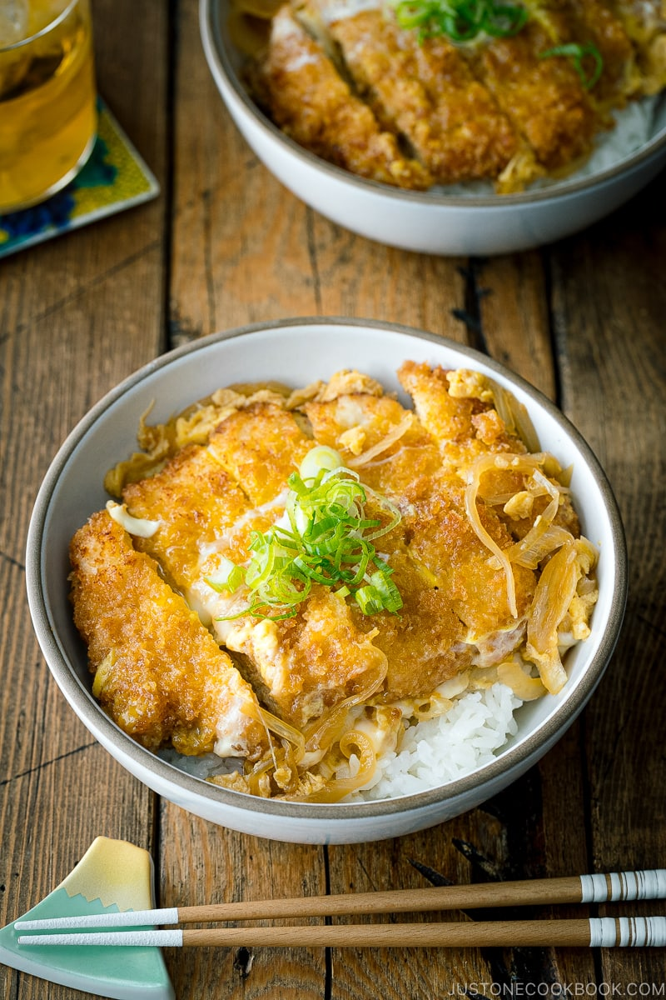

Katsu Don

Ingredients
Sauce
- 1 Cup Dashi
- 2 tsp Sugar
- 2 Tbsp Shoyu
- 2 Tbsp Mirin
Others
- 2 Tonkatsu
- 3 Eggs
- 1/2 Onion
- 2 servings Rice
Steps
- Cook the onion in the savory broth (Dashi, Sugar, Shoyu, Mirin) till tender.
- Place Tonkatsu on top to let it absorb the flavors of the broth.
- Add the beaten egg mixture and cook till just set.
- Place on top of rice and enjoy!
Back to Home